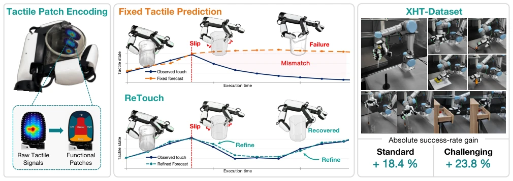
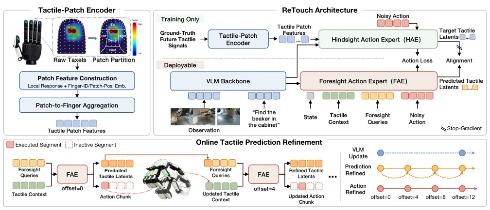
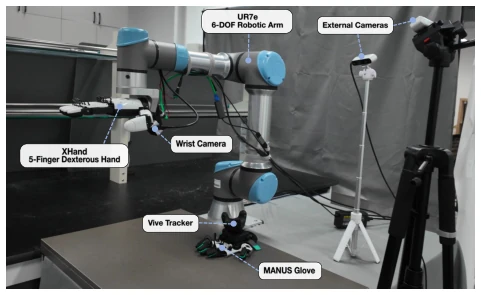
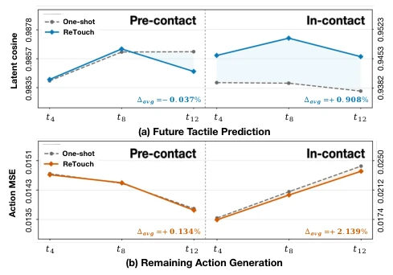
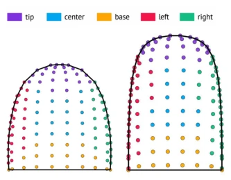
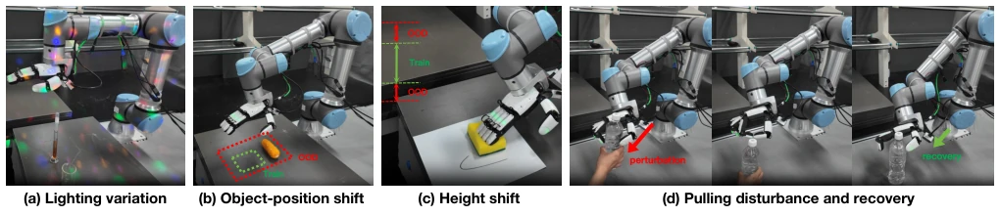
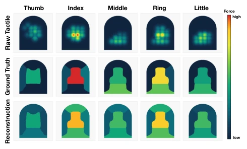
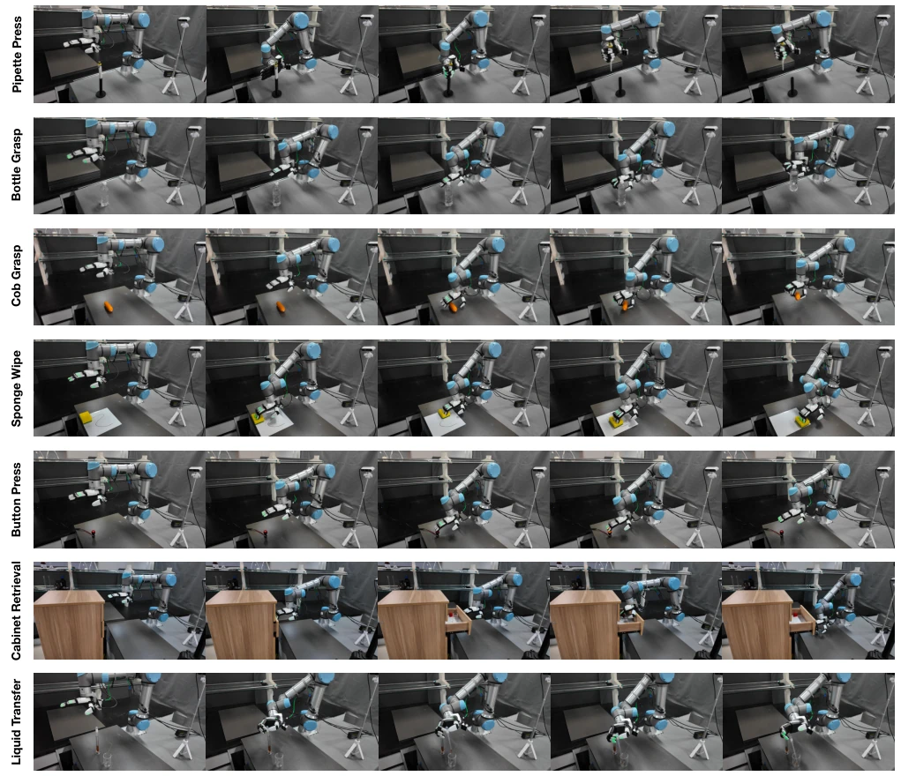

Tactile sensing is often regarded as "icing on the cake" in dexterous manipulation, but ReTouch proves it is a "lifeline". The authors did not pursue fancy simulations, but directly deployed on the real robot XHand, using online tactile prediction to correct actions, which is a very pragmatic approach. However, treating tactile prediction as recursively updated control states, while solving the problem of "outdated predictions", makes computational overhead and latency control absolute formidable challenges. In baseline comparisons, VLA with tactile added shows mixed performance, indicating this approach is not a panacea. Overall, this work transforms tactile sensing from "passive observation" to "active prediction", but there is still a gap to general dexterous manipulation, after all it hasn't learned how to elegantly recover when slipping (although it appears quite stable in the table).
研究动机Motivation
视觉 VLA 模型（如 Black et al. 2024）懂指令但看不清接触细节，多指操作中遮挡严重，力反馈信息缺失。现有触觉策略（Huang et al. 2025b）往往把触觉信号压扁成 token，丢失了手指拓扑结构。更致命的是，预测式方法（Zang et al. 2026）在动作块开始时预测一次，执行中触觉状态变了（如打滑），预测就过时了，导致动作修正失效。ReTouch 想解决两个痛点：一是如何保留手指级别的触觉结构，二是如何让触觉预测在执行中“活”过来，而不是死板地按初始预测执行。
Visual VLA models (e.g., Black et al. 2024) understand instructions but cannot see contact details clearly, occlusion is severe in multi-finger manipulation, and force feedback information is missing. Existing tactile strategies (Huang et al. 2025b) often flatten tactile signals into tokens, losing finger topological structure. More fatally, predictive methods (Zang et al. 2026) predict once at the start of an action block; during execution, tactile states change (e.g., slipping), making the prediction outdated, causing action correction to fail. ReTouch aims to solve two pain points: first, how to retain finger-level tactile structure, and second, how to make tactile prediction "come alive" during execution, rather than rigidly executing according to initial predictions.

Figure 1: Overview of ReTouch. Left: the Tactile-Patch Encoder organizes raw dexterous-hand tactile signals into structured tactile patch features. Middle: fixed tactile forecasts can diverge from the actual contact state after slippage, while ReTouch continually refines tactile predictions using the latest tactile feedback and updates action chunks accordingly. Right: XHT- Dataset: seven real-world contact-rich tasks on XHand–UR7e under standard and challenging settings.
The overall architecture decouples low-frequency VLM (9Hz) and high-frequency tactile modules (36Hz). The core is the Tactile-Patch Encoder, which divides 120 taxels per finger into 5 functional regions (fingertip, center, base, etc.), generating structured patch features with identity embeddings, preserving local contact topology. During the training phase, Hindsight Action Expert (HAE) is introduced to generate target latents using future real tactile data; Foresight Action Expert (FAE) learns to predict these latents from current observations, and aligns both through cosine distance loss. During deployment, FAE utilizes cached VLM context and latest tactile feedback to recursively update future tactile latents and remaining action blocks. This online refinement mechanism ensures predictions are always aligned with physical interactions, avoiding biases of fixed predictions.

Figure 2: Framework of ReTouch. The Tactile-Patch Encoder structures future tactile signals for a training-only Hindsight Action Expert, whose action-relevant targets supervise the deployable VLM–Foresight Action Expert (FAE) pathway. At deployment, the FAE refines future tactile latents and the remaining action chunk using cached VLM context and latest tactile feedback.

Figure 7: Real-world system used for demonstration collec- tion and policy evaluation. Wrist motion is captured with a VIVE tracker, finger motion with a MANUS glove, and visual observations with one wrist-mounted and two fixed external RGB cameras.
Based on XHT-Dataset, containing 900 real-world demonstrations, 7 contact-rich tasks (e.g., liquid transfer, cap grasping). Compared against ViTacFormer, Tactile-VLA, and pi0 series baselines. Under standard settings, ReTouch success rate improved by 18.4%; under challenging settings, improved by 23.8%. Ablation studies show that removing online refinement causes success rate to plummet by 23.6%, proving dynamic update of predictions is key compared to fixed predictions. Under lighting changes and pulling perturbations after grasping, ReTouch remains robust, indicating tactile feedback effectively compensates for visual failure and physical interference.

Figure 5: Effect of online refinement of future tactile predic- tions across contact phases on future tactile latent similarity (top) and remaining-action MSE (bottom). Results at t0 are omitted since both methods are identical before refinement.

Figure 6: Fixed XHand taxel-to-patch maps for (a) the T30 thumb sensor and (b) the T16 sensors used by the other four fingers. Each color denotes one spatial patch.

Figure 9: Challenging evaluation settings: (a) Liquid Transfer under dynamic projector-generated illumination, (b) Cob Grasp at held-out object positions, (c) Sponge Wipe at unseen manipulation heights, and (d) Bottle Grasp with a downward pulling disturbance applied after stable lifting, followed by autonomous grasp recovery.
其他图片Other Figures

Figure 4: Example of structured tactile patch encoding across the five fingers. Ground-truth values are patch-wise magni- tudes of contact-strength-weighted mean forces; predicted values are reconstructed from the corresponding finger-level tactile tokens by the tactile-summary head.

Figure 8: Representative execution sequences for the seven real-world tasks. Each row shows five temporal snapshots from initialization to task completion.